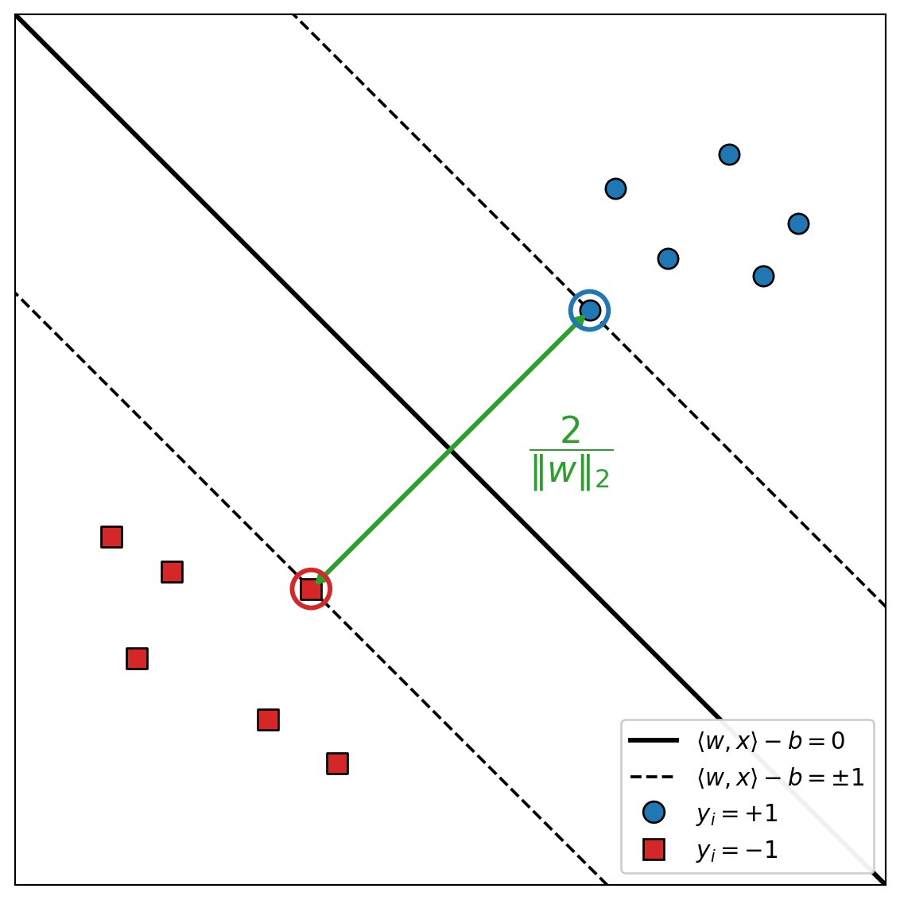
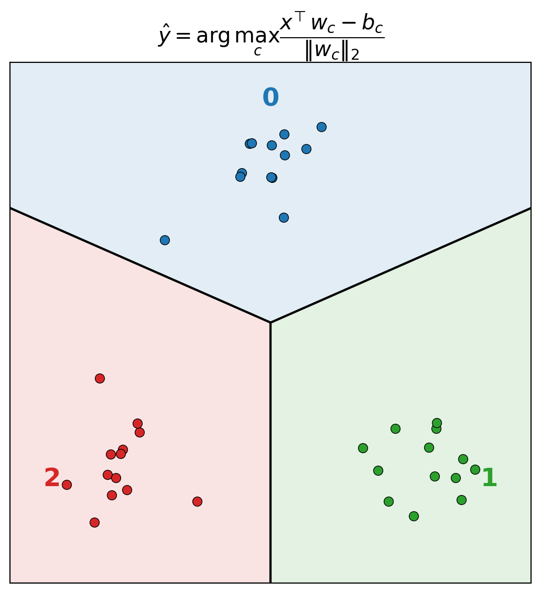

13 Classification
Given labelled training data, the goal of a classification problem is to predict a discrete label for each new (test) data point. This chapter develops the support vector machine (SVM) for binary classification, the Lagrangian duality theory behind its kernelized (dual) form, the soft-margin extension for non-separable data, and finally the reduction of multi-class classification to a collection of binary problems.
13.1 Support Vector Machine for Binary Classification
The binary classification problem
- Train data: \((\vec{x}_1, y_1), (\vec{x}_2, y_2), \dots, (\vec{x}_n, y_n)\) where \(\vec{x}_i \in \mathbb{R}^d\) and \(y_i \in \{1, -1\}\).
- Test data: \(\vec{x}_1, \vec{x}_2, \dots \in \mathbb{R}^d\).
- Goal: predict a label \(1\) or \(-1\) for each \(\vec{x}_i\).
Linearly separable data
A binary problem is linearly separable if there exists an affine hyperplane \(\langle w, x\rangle - b\) that separates the data, i.e. \[ \exists\, w \in \mathbb{R}^d,\ b \in \mathbb{R}, \quad\text{s.t.}\quad \operatorname{sign}\!\big(\langle w, x_i\rangle - b\big) = y_i, \qquad \forall\, i = 1, 2, \dots, n . \]
For a linearly separable problem there could be multiple choices of \(w\) and \(b\). A good choice for better generalization is to choose a plane that maximizes the margin.
Maximizing the margin
For linearly separable data, a separating plane \(\langle w, x\rangle - b = 0\) satisfies \[ \begin{cases} \langle w, x_i\rangle - b \ge 0, & y_i = 1, \\ \langle w, x_i\rangle - b \le 0, & y_i = -1 . \end{cases} \] We may push the plane out on both sides until it touches the boundary of each class, giving the two supporting hyperplanes \[ \langle w, x\rangle - b = 1 \qquad\text{and}\qquad \langle w, x\rangle - b = -1, \qquad\text{s.t.}\qquad \begin{cases} \langle w, x_i\rangle - b \ge 1, & y_i = 1, \\ \langle w, x_i\rangle - b \le -1, & y_i = -1 . \end{cases} \] The perpendicular distance between these two hyperplanes — the margin — is \[ \frac{2}{\|w\|_2} . \]
We wish to maximize this distance, so the classification objective is \[ \max_{w \in \mathbb{R}^d,\; b \in \mathbb{R}} \ \frac{2}{\|w\|_2} \qquad\text{s.t.}\qquad \begin{cases} w^{\mathsf T} x_i - b \ge 1, & \text{if } y_i = 1, \\ w^{\mathsf T} x_i - b \le -1, & \text{if } y_i = -1 . \end{cases} \]
Maximizing \(2/\|w\|_2\) is the same as minimizing \(\tfrac12\|w\|_2^2\), and the two constraints combine into the single condition \(y_i(\langle w, x_i\rangle - b)\ge 1\).
Definition 13.1 (Primal form of SVM) \[ \min_{w,\,b} \ \tfrac12 \|w\|_2^2 \qquad\text{s.t.}\qquad y_i\big(w^{\mathsf T} x_i - b\big) \ge 1, \qquad \forall\, i = 1, \dots, n . \]
Remark.
- The constraint condition is equivalent to the two-sided condition above.
- This problem can be solved by constrained optimization methods.
13.2 Duality of Constrained Optimization
To introduce non-linearity into the SVM one uses the kernel trick. This requires the dual form of the SVM, so we first review the duality of a general constrained optimization problem.
The Lagrangian and the dual function
Consider the constrained optimization problem \[ \min_x \ f(x) \qquad\text{s.t.}\qquad \begin{cases} f_i(x) \le 0, & i = 1, \dots, m, \\ h_i(x) = 0, & i = 1, \dots, p . \end{cases} \] As in Lagrangian penalty methods, construct the Lagrangian \(L : D \times \mathbb{R}^m \times \mathbb{R}^p \to \mathbb{R}\), where \(D\) is the joint domain of the constraints: \[ L(x, \lambda, v) = f(x) + \sum_{i} \lambda_i f_i(x) + \sum_i v_i h_i(x) . \]
Definition 13.2 (Lagrange dual function) The function \(g : \mathbb{R}^m \times \mathbb{R}^p \to \mathbb{R}\) defined by \[ g(\lambda, v) := \min_{x \in D} L(x, \lambda, v) \] is called the Lagrange dual function. When \(L\) is unbounded below, \(g \to -\infty\).
The primal value as a min–max
Remark.
- The optimal value \(p^\ast\) of the original problem is an upper bound of the dual function: \(g(\lambda, v) \le p^\ast\) for all \(\lambda \ge 0, v\).
- The optimal value can be expressed as \[ p^\ast = \min_x \ \max_{\lambda \ge 0,\, v} \ L(x, \lambda, v). \]
The second point is valid through the following argument. Observe that \[ \sup_{\lambda \ge 0,\, v} L(x, \lambda, v) = \begin{cases} f_0(x), & x \in D, \\ \infty, & \text{otherwise}. \end{cases} \] Indeed, if \(x \notin D\) then there exists \(i\) with \(f_i(x) > 0\) or \(i\) with \(h_i(x) \ne 0\); either case lets us choose a proper \(\lambda_i\) or \(v_i\) so that \(L \to \infty\). Thus \[ \min_x \ \max_{\lambda,\, v} L = \min_{x \in D} f_0(x) = p^\ast . \]
The min–max inequality
Theorem 13.1 (Min–max inequality) Let \(f : W \times Z \to \mathbb{R}\) with \(W \subseteq \mathbb{R}^n\) and \(Z \subseteq \mathbb{R}^m\). Then \[ \min_{w \in W} \ \max_{z \in Z} f(w, z) \ \ge\ \max_{z \in Z} \ \min_{w \in W} f(w, z) . \]
Proof. Let \(w^0 \in W\). Then \[ \max_{z \in Z} f(w^0, z) \ge f(w^0, z), \qquad \forall\, z \in Z . \] Next let \(z^0 \in Z\). Then \[ \min_{w \in W} f(w, z^0) \le f(w', z^0), \qquad \forall\, w' \in W . \] Combining, \[ \min_{w \in W} f(w, z^0) \le f(w^0, z^0) \le \max_{z \in Z} f(w^0, z) . \] Let \(h(z) = \min_{w \in W} f(w, z)\) and \(g(w) = \max_{z \in Z} f(w, z)\). Then \[ g(w) \ge h(z), \qquad \forall\, w \in W,\ z \in Z , \] so \(g(w) \ge \max_{z \in Z} h(z)\) for all \(w \in W\), and therefore \[ \min_{w \in W} g(w) \ge \max_{z \in Z} h(z) \quad\Longrightarrow\quad \min_{w \in W} \max_{z \in Z} f(w, z) \ge \max_{z \in Z} \min_{w \in W} f(w, z) . \qquad\blacksquare \]
Applying this inequality to the primal problem yields the Lagrange dual problem.
The Lagrange dual problem
Definition 13.3 (Dual problem) Let \(L\) be the Lagrangian of the primal problem. The corresponding dual problem is \[ \max_{\lambda \ge 0,\, v} \ g(\lambda, v) . \]
Remark. From Theorem 13.1, the primal and dual are related by \[ p^\ast = \min_x \ \max_{\lambda \ge 0,\, v} L(x, \lambda, v) \ \ge\ \max_{\lambda \ge 0,\, v} \ \min_x L(x, \lambda, v) = d^\ast , \] so the dual optimum \(d^\ast\) bounds the primal optimum \(p^\ast\) from below.
Weak duality and duality gap. When \(d^\ast < p^\ast\), we have weak duality, and \(p^\ast - d^\ast\) is called the duality gap.
Strong duality and Slater’s condition. When \(d^\ast = p^\ast\) holds, we have strong duality. A specific condition that must hold for strong duality is called a constraint qualification; one simple example is Slater’s condition.
Proposition 13.1 (Slater’s condition) For the primal problem \[ \min_x \ f_0(x) \qquad\text{s.t.}\qquad \begin{cases} f_i(x) \le 0, & i = 1, \dots, m, \\ A x = b, \end{cases} \] Slater’s condition holds if
- \(f_0, f_1, \dots, f_m\) are convex, and
- there exists \(x \in D\) such that \(f_i(x) < 0\) for \(i = 1, \dots, m\) and \(Ax = b\).
13.3 Kernel SVM: The Dual Form
Back to the SVM objective: it is not hard to see that the primal SVM satisfies Slater’s condition. Thus we can find the dual form of the SVM using the Lagrangian \[ L = \tfrac12 \|w\|_2^2 + \sum_i \lambda_i\Big(-\big(\langle w, x_i\rangle - b\big) y_i + 1\Big) . \]
We first find \(\min_{w \in \mathbb{R}^d,\, b \in \mathbb{R}} L\) for the Lagrange dual function. Setting the derivatives to zero, \[ \begin{cases} \dfrac{\partial L}{\partial w_i} = w_i - \displaystyle\sum_j \lambda_j x_j^{\,i} y_j = 0, \\[2mm] \dfrac{\partial L}{\partial b} = \displaystyle\sum_i y_i \lambda_i = 0, \end{cases} \qquad\Longrightarrow\qquad \begin{cases} w^\ast = \tfrac12 \displaystyle\sum_i y_i \lambda_i x_i, \\[2mm] \displaystyle\sum_i y_i \lambda_i = 0 . \end{cases} \]
Substituting back, \[ \min_{w,\,b} L = \begin{cases} \tfrac12 \|w^\ast\|_2^2 + \displaystyle\sum_i \lambda_i\Big(-\big(\langle w^\ast, x_i\rangle - b\big) y_i + 1\Big), & \sum_i y_i \lambda_i = 0, \\ -\infty, & \sum_i y_i \lambda_i \ne 0 . \end{cases} \] (If \(\sum_i y_i \lambda_i \ne 0\), the term \(-b \sum_i \lambda_i y_i\) can be driven to \(\to -\infty\).) The two pieces evaluate to \[ \tfrac12 \|w^\ast\|_2^2 = \tfrac12 \langle w^\ast, w^\ast\rangle = \tfrac18 \sum_{i,j} y_i y_j \lambda_i \lambda_j \langle x_i, x_j\rangle, \] \[ \sum_i \lambda_i\Big(-\big(\langle w^\ast, x_i\rangle - b\big) y_i + 1\Big) = -\sum_i \lambda_i \langle w^\ast, x_i\rangle y_i + \sum_i \lambda_i = -\tfrac12 \sum_{i,j} \lambda_i \lambda_j y_i y_j \langle x_i, x_j\rangle + \sum_i \lambda_i . \] Therefore \[ \min_{w,\,b} L = \begin{cases} -\tfrac14 \displaystyle\sum_{i,j} \lambda_i \lambda_j y_i y_j \langle x_i, x_j\rangle + \sum_i \lambda_i, & \sum_i y_i \lambda_i = 0, \\ -\infty, & \sum_i y_i \lambda_i \ne 0 . \end{cases} \]
Definition 13.4 (Dual form of SVM) \[ \max_{\lambda \ge 0} \ -\tfrac14 \sum_{i,j} \lambda_i \lambda_j y_i y_j \langle x_i, x_j\rangle + \sum_i \lambda_i \qquad\text{s.t.}\qquad \sum_i y_i \lambda_i = 0 . \]
Remark. In the dual form, \(x_i\) appears only as an inner product \(\langle x_i, x_j\rangle\), and can be replaced with a kernel function — this is the kernel trick.
13.4 Soft Margin for Non-separable Data
In many cases the data are not (strictly) linearly separable. The solution is to introduce a “soft” margin that allows misclassification. The constraints are modified to \[ y_i\big(\langle w, x_i\rangle - b\big) \ge 1 - \xi_i . \]
Remark.
- Instead of the hard constraint that all data of a class lie on one side of the hyperplane, soft margins allow a set of hyperplanes that permit some violations.
- We would hope the slack variables \(\xi_i\) are not too large.
Primal problem with soft margin
\[ \min_{w,\,b,\,\xi} \ \tfrac12 \|w\|_2^2 + C \sum_i \xi_i \qquad\text{s.t.}\qquad y_i\big(\langle w, x_i\rangle - b\big) \ge 1 - \xi_i, \quad \xi_i \ge 0 . \]
Here \(C\) (written \(\lambda\) in one place in the source) is the regularization parameter.
Dual problem with soft margin
Following a similar procedure to the hard-constraint problem, the dual form of the soft margin is \[ \max_{\lambda \ge 0} \ \sum_i \lambda_i - \tfrac14 \sum_{i=1}^{n} \sum_j y_i y_j \lambda_i \lambda_j \langle x_i, x_j\rangle \qquad\text{s.t.}\qquad \sum_i \lambda_i y_i = 0 \ \ \&\ \ \lambda_i \le \frac{1}{2n\lambda} . \]
13.5 Multi-class Classification
The multi-class classification problem can be reduced to the binary case using the “one-vs-all” scheme.
For a multi-class problem the data set is \((\vec{x}_1, y_1), \dots, (\vec{x}_n, y_n)\) as before, but now \(y_i \in \{0, 1, \dots, C-1\}\), for a total of \(C\) distinct classes.
One-vs-all scheme
The goal of a multi-class classifier is: given a data point, decide that it is in the \(i\)-th class and not in any other class. Therefore, for each class we can construct a binary classification problem — is the data point in this class or not? — which gives a decision boundary between points in this class and those not in it. Doing this for all classes yields a classification region based on these boundaries.
Example (3 classes). We build three binary classifiers, one for each of classes \(1, 2, 3\). For each binary classifier we create the one-vs-all label \[ \hat{y}_i = \begin{cases} 1, & \text{if } y_i \text{ is in class } c, \\ -1, & \text{if not}, \end{cases} \qquad c = 1, 2, 3 . \] This creates \(3\) decision boundaries, one per class.
Each line separates the space into a region “\(\in C\)” and the other side “\(\notin C\)”. As before, if the weight for the classifier of class \(c\) is \(\vec{w}_c\), then \[ \begin{cases} x_i^{\mathsf T} w_c - b > 0 \ \Rightarrow\ x_i \in C, \\ x_i^{\mathsf T} w_c - b < 0 \ \Rightarrow\ x_i \notin C . \end{cases} \] This separates the space into subdomains.
Decision regions
Combining the binary boundaries, a test point falls into one of three cases.
(1) Positive side of exactly one boundary. The straightforward case: the point is on the positive side of exactly one boundary and on the negative side of all others. Then the predicted class is the one on whose positive side it lies: \[ \hat{y}_i = \arg\max_c \big(x_i^{\mathsf T} w_c - b\big) . \]
(2) Positive side of more than one boundary. The point could plausibly belong to two classes; we should choose the one that is more “plausible”. Note that for a binary classifier, a point further from the boundary is considered more confident, whereas a point closer to the boundary is more likely to be mistakenly labelled. Thus we use the distance to the decision boundary as a decision indicator: the class is the boundary that is furthest. The distance from \(x_i\) to the boundary for class \(c\) is \[ \frac{x_i^{\mathsf T} w_c - b_c}{\|w_c\|_2}, \] so \[ \hat{y}_i = \arg\max_{c = 0, \dots, C-1} \ \frac{x_i^{\mathsf T} w_c - b_c}{\|w_c\|_2} . \]
(3) Negative side of all boundaries. We decide the class as the opposite of case (2): when a point is further from a boundary, it is more confident of not being in that class, so we assign the class whose boundary has the smallest distance. Since \(\dfrac{x_i^{\mathsf T} w_c - b_c}{\|w_c\|_2}\) is the signed distance, \[ \hat{y}_i = \arg\min_c \ -\frac{x_i^{\mathsf T} w_c - b_c}{\|w_c\|_2} = \arg\max_c \ \frac{x_i^{\mathsf T} w_c - b_c}{\|w_c\|_2} . \]
All three cases therefore reduce to the same rule: predict the class with the largest signed distance.

General procedure
The 3-class example extends to the general multi-class case, summarized as follows.
One-vs-all multi-class classification
Input: \(\{(\vec{x}_i, y_i)\}\) with \(y_i \in \{0, 1, \dots, C-1\}\).
For \(c = 0, \dots, C-1\):
- Relabel each sample \(p\) by \[ \hat{y}_p = \begin{cases} +1, & \text{if } y_p = c, \\ -1, & \text{else}. \end{cases} \]
- Solve the binary subproblem \(\{(\vec{x}_p, \hat{y}_p)\} \to (w_c, b_c)\).
- Normalize the weights: \(\displaystyle w_c \leftarrow \frac{w_c}{\|w_c\|_2}, \quad b_c \leftarrow \frac{b_c}{\|w_c\|_2}\).
Predict the label by \(\hat{y} = \arg\max_c \ x^{\mathsf T} w_c\).
Remark.
- The normalization does not change the decision in case (1).
- In practice one can use one-hot encoding, e.g. a class-\(1\) target \[ \begin{pmatrix} -1 \\ 1 \\ -1 \\ \vdots \end{pmatrix} \]